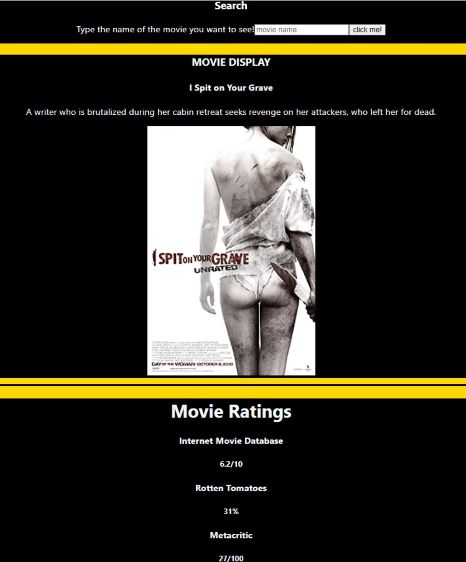

Motivated and technically proficient Cloud Developer with a solid foundation in full-stack development and a specialization in cloud computing technologies. Leveraging hands-on experience gained through a Software Engineering bootcamp and rigorous self-study, I am well-equipped to contribute effectively to dynamic development teams. Skilled in a diverse range of programming languages, frameworks, and cloud services, including JavaScript, Python, AWS, React.js, and Docker, among others. Possessing a proven track record of successfully completing projects and achieving certifications, including AWS Certified Developer - Associate. Eager to apply my knowledge and passion for cloud computing to drive innovation and deliver scalable solutions in an entry-level cloud developer role.
Brandon D. Smith
AWS Developer & Software Engineer
.JPG)
Experience
Software Engineer
Chingu | Dallas,Tx
July 2023 - September 2023
- Collaborated with team members from diverse backgrounds and time zones to deliver a project within a strict time frame.
- Developed and maintained our backend utilizing the power of firebase and javascript.
- Helped design the UI for better user experience.
- Utilized GitHub for version controling, enabling smooth collaboration with team members and effective code management.
Backend Developer
M.. | Dallas,Tx
July 2023 - September 2023
- Designed and maintained the backend infrastructure for a social media app using AWS.
- Created RESTful APIs and GraphQL endpoints to support various app features, enabling efficient data retrieval and manipulation
- Utilized DynamoDB to manage user data, posts, and interactions, ensuring data consistency and reliability.
Software Engineer
Per Scholas | Dallas,Tx
July 2023 - September 2023
- Designed and maintained the backend infrastructure for a social media app using AWS.
- Integrated third-party APIs and services into Node.js applications, facilitating seamless communication and data exchange between different systems.
- Utilized AWS Cloud Databases, specifically Aurora PostgreSQL or Oracle RDS, for efficient and scalable data storage.
- Implemented event-driven communication patterns to enable real-time data processing and seamless integration between microservices.
Projects
PC Parts
Movie Hunt
